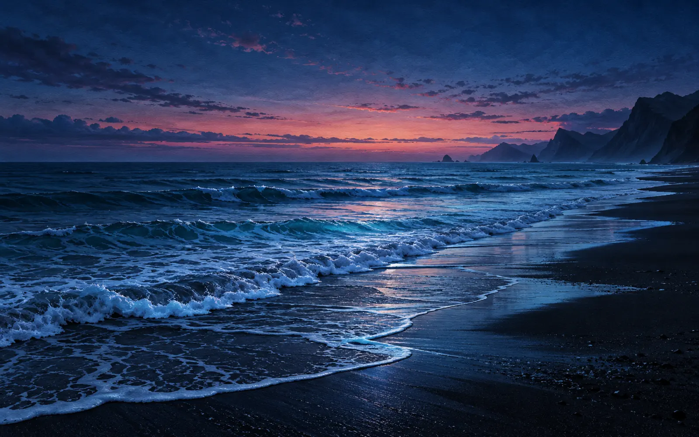

상황을 고르면, 바로 시작
강의 후, 업무 후, 잠들기 전. 지금 필요한 쉼을 선택하면 준비된 조합을 바로 재생합니다.
Your pause, your way
포즈스케이프는 선택의 피로를 줄이고, 휴식에 필요한 것만 남겼습니다. 지금의 상황을 고르면 어울리는 풍경과 소리로 바로 시작할 수 있어요.
강의 후, 업무 후, 잠들기 전. 지금 필요한 쉼을 선택하면 준비된 조합을 바로 재생합니다.
여섯 가지 풍경과 자연음을 자유롭게 조합하고, 최대 세 개 소리의 균형을 섬세하게 조절하세요.
5·10·20분 타이머가 끝나면 소리가 천천히 잦아듭니다. 다시 일상으로 돌아갈 틈까지 지켜드려요.
Studio
한 번 만든 조합은 저장해 두고, 필요할 때 언제든 다시 꺼낼 수 있습니다.

Offline, still peaceful
기본 휴식 팩을 한 번 준비하면 비행기 안에서도, 신호가 약한 여행지에서도 좋아하는 풍경과 소리를 그대로 사용할 수 있어요.